import pandas as pd
import numpy as np
import pyextremes
from pyextremes import EVA
from scipy.stats import chi2, genpareto, ttest_1samp
import matplotlib.pyplot as plt
import seaborn as sns
import pyextremes
from arch import arch_model
import yfinance as yf
from multiprocessing import Pool
from VaR_backtest_utils import backtest_single, init_workerPOT-Implementation - S&P500 - naive vs. whitened
Problem Statement and Objectives
This project demonstrates two complementary approaches to tail risk estimation for the S&P 500. The first applies a GARCH(1,1) filter prior to POT analysis, yielding a conditional EVT model in which risk measures vary with the current volatility regime. This approach is suited for short-term risk management: it produces dynamic \(\text{VaR}_{\alpha}\) and \(\text{ES}_{\alpha}\) estimates that can be validated via rolling-window backtesting (Kupiec and Christoffersen tests) and used for 10-day forward forecasts via filtered historical simulation. The second approach applies POT directly to the raw log-losses. While this unconditional model is too static for day-to-day risk management, it is the natural framework for long-run tail characterisation: return levels and return periods, which describe the magnitude and frequency of extreme losses without reference to a specific volatility state.
Preparation
Package-Loading
Loading Data - S&P500
For this project I chose the S&P 500 Index. The rationale for using an index is that it allows applying POT in a somewhat informative way for producing \(\text{VaR}_{\alpha}\) and \(\text{ES}_{\alpha}\) estimates, whereas a single stock doesn’t capture how a portfolio behaves in the tails of the return distribution. To address this more realistically, multivariate extreme value modelling would be needed (forthcoming).
Choice of Sample Period
I use daily S&P 500 closing prices from 1980 onwards. There are two main reasons for this long sample window.
prices = yf.download("^GSPC", start="1980-01-01")[
"Close"
] # on single stocks Adj.Close
returns_dec = prices.pct_change().dropna().squeeze() # squeze for series format
log_losses = -np.log(prices / prices.shift(1)).dropna().squeeze()
n_years = (returns_dec.index[-1] - returns_dec.index[0]).days / 365.25
n_obs = len(returns_dec)
fig, axes = plt.subplots(1, 2, figsize=(16, 5))
axes[0].plot(prices.index, prices.values)
axes[1].plot(returns_dec.index, returns_dec.values)
axes[0].set_title("S&P 500 Price Devlopment")
axes[1].set_title("S&P 500 %-Returns")
plt.tight_layout()
plt.show()
[*********************100%***********************] 1 of 1 completed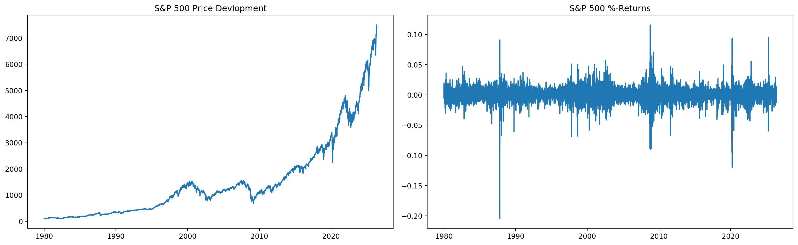
First, EVT relies on a sufficient number of tail observations. With roughly 46 years of daily data, the sample contains over 11,691 returns and several hundred exceedances even at high thresholds, which gives the GPD estimates a comfortable basis.
Second, the sample covers a wide range of structurally different crisis episodes — Black Monday (1987), the dot-com crash (2000–2002), the global financial crisis (2007–2009), the European sovereign debt crisis (2011), the COVID-19 shock (March 2020), and the 2022 inflation regime. This diversity makes the estimated tail behaviour less dependent on any single episode and arguably more representative of the kinds of extremes a risk manager has to anticipate.
The main caveat is stationarity: over a window of this length, market microstructure, regulation, and the index composition itself have changed substantially, so strict stationarity is implausible for the raw return series. The GARCH pre-whitening step addresses part of this concern by absorbing time-varying volatility into the conditional variance, leaving the standardised residuals as the object on which the (much weaker) stationarity assumption is then imposed.
Volatility-filtered POT-Analysis - Conditional Analysis
Pre-Whitening
Financial return series exhibit several well-known stylized facts: they are not iid, volatility varies over time, and extreme returns tend to cluster. This section shows how these features can be accounted for by pre-filtering the series with a GARCH model before applying POT analysis. A full treatment of GARCH modelling and autocorrelation diagnostics is given in a separate project (univariate and multivariate time series modelling (forthcoming)); here I only sketch the idea.
The GARCH(\(p\),\(q\)) model is defined as
\[ X_t = \sigma_t Z_t, \qquad \sigma_t^2 = \alpha_0 + \sum_{i=1}^{p} \alpha_i X_{t-i}^2 + \sum_{j=1}^{q} \beta_j \sigma_{t-j}^2. \]
The basic idea is that periods of high volatility persist through large values of either \(|X_{t-i}|\) or \(\sigma_{t-j}\). I use a simple GARCH(1,1), where persistence enters through \(|X_{t-1}|\) and \(\sigma_{t-1}\) only. Note that this does not restrict persistence to a single lag: through the recursive structure of \(\sigma_t^2\), shocks from much earlier periods continue to propagate via \(\sigma_{t-1}\).
garch = arch_model(returns_dec*100, vol='GARCH', p=1, q=1)
result = garch.fit(disp='off')
std_resid = result.resid / result.conditional_volatility
losses = -std_resid.dropna()Although the model implicitly assumes a normal distribution for the innovations \(Z_t\), this is not a concern for the subsequent analysis: the standardised residuals are clearly non-normal, and it is precisely those that feed into the POT step. For inference on \(\operatorname{VaR}_\alpha\) and \(\operatorname{ES}_\alpha\) we only rely on the conditional volatility \(\hat{\sigma}_t\), so the normality assumption matters only insofar as it shapes the likelihood used to estimate the recursion parameters \(\alpha_0\), \(\alpha_1\), and \(\beta_1\).
While maximum likelihood estimation is generally only consistent under a correctly specified distribution, Bollerslev and Wooldridge (1992) showed that the Gaussian likelihood yields consistent estimates of the GARCH parameters even when \(Z_t\) is not normal — this is the Quasi-Maximum-Likelihood (QML) result. The intuition is that the score of the Gaussian log-likelihood has mean zero as long as the conditional mean and variance are correctly specified; the shape of the innovation distribution beyond the first two conditional moments does not enter the first-order conditions. QML estimates are consistent but not efficient, which is reflected in larger standard errors. The arch package accounts for this by reporting Bollerslev–Wooldridge robust (sandwich) standard errors by default.
Choosing the Threshold \(u\)
For the choice of the threshold \(u\), I use plot_mean_residual_life and plot_parameter_stability from the pyextremes package.
pyextremes.plot_mean_residual_life(losses)
plt.show()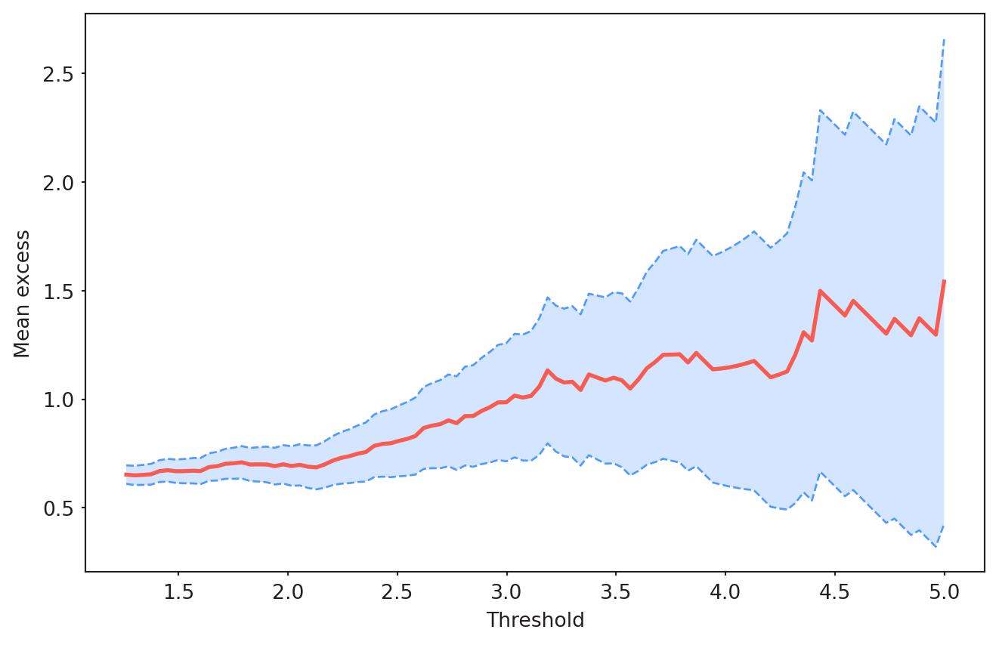
In theory, if the exceedances above \(u\) follow a GPD, the mean excess function is linear in \(u\): \[ E[X - u \mid X > u] = \frac{\sigma_u + \xi u}{1 - \xi}. \]
The mean-residual-life plot should therefore become approximately linear above a valid threshold. Here, linearity roughly holds for \(u \gtrsim 2.0\). Beyond \(u \approx 3.0\), the estimate becomes erratic and the confidence bands widen substantially, reflecting the small number of exceedances at such high levels. This suggests a threshold somewhere in the interval \([2.0, 3.0]\).
To narrow this down, I check whether the GPD parameters are stable in this range. Under a correctly specified GPD above \(u\), the shape \(\xi\) should be constant, and so should the modified scale \(\sigma^{*} = \sigma_u - \xi u\) (the scale \(\sigma_u\) itself is expected to vary linearly with \(u\) and is therefore not a useful stability criterion).
pyextremes.plot_parameter_stability(losses)
plt.show()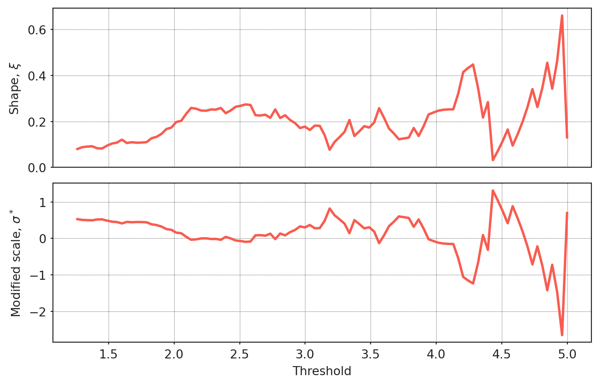
Both parameters are reasonably stable for \(u \in [2.0, 2.5]\); beyond that, the variance of the estimators grows noticeably, likely due to the decreasing number of exceedances. The admissible range is thus \(u \in [2.0, 2.5]\). Before fixing \(u\), I check the number of exceedances at a few candidate levels:
print(f"Exceedances at u = 2: {np.sum(losses > 2.0)}")
print(f"Exceedances at u = 2.2: {np.sum(losses > 2.2)}")
n_exceed_u = int(np.sum(losses > 2.2))
print(f"Exceedances at u = 2.5: {np.sum(losses > 2.5)}")Exceedances at u = 2: 370
Exceedances at u = 2.2: 271
Exceedances at u = 2.5: 164With roughly 271 exceedances at \(u = 2.2\), the sample size is comfortable for GPD estimation while the threshold still lies within the range supported by the diagnostics.
POT Analysis
I now fit a POT model to the standardised residuals from the GARCH filter, again using pyextremes. Parameter estimation is performed via MCMC using the emcee sampler, which provides the full posterior distribution of \((\xi, \sigma_u)\) rather than only point estimates. This allows for a proper quantification of parameter uncertainty and for constructing credible intervals on derived risk measures such as \(\operatorname{VaR}_\alpha\) and \(\operatorname{ES}_\alpha\). A Bayesian approach is also attractive here because GPD maximum likelihood estimates are known to have poor finite-sample properties, especially when \(\xi\) is small or negative.
Sampling is parallelised across the 200 walkers of the emcee ensemble using Pool from the multiprocessing package. The number of worker processes should be set according to the available CPU cores on your machine.
model = EVA(data=losses)
model.get_extremes(method="POT", threshold=2.2)
with Pool(10) as pool: # Adjust n_workers to the number of available CPU cores
model.fit_model(
distribution="genpareto",
model="Emcee",
n_walkers=200,
n_samples=2000,
pool=pool
)Having fitted the model, I look at the diagnostic plots and check whether the assumption of the model match the data.
model.plot_diagnostic()(<Figure size 768x768 with 4 Axes>,
(<Axes: title={'center': 'Return value plot'}, xlabel='Return period', ylabel='extreme values'>,
<Axes: title={'center': 'Probability density plot'}, ylabel='Probability density'>,
<Axes: title={'center': 'Q-Q plot'}, xlabel='Theoretical', ylabel='Observed'>,
<Axes: title={'center': 'P-P plot'}, xlabel='Theoretical', ylabel='Observed'>))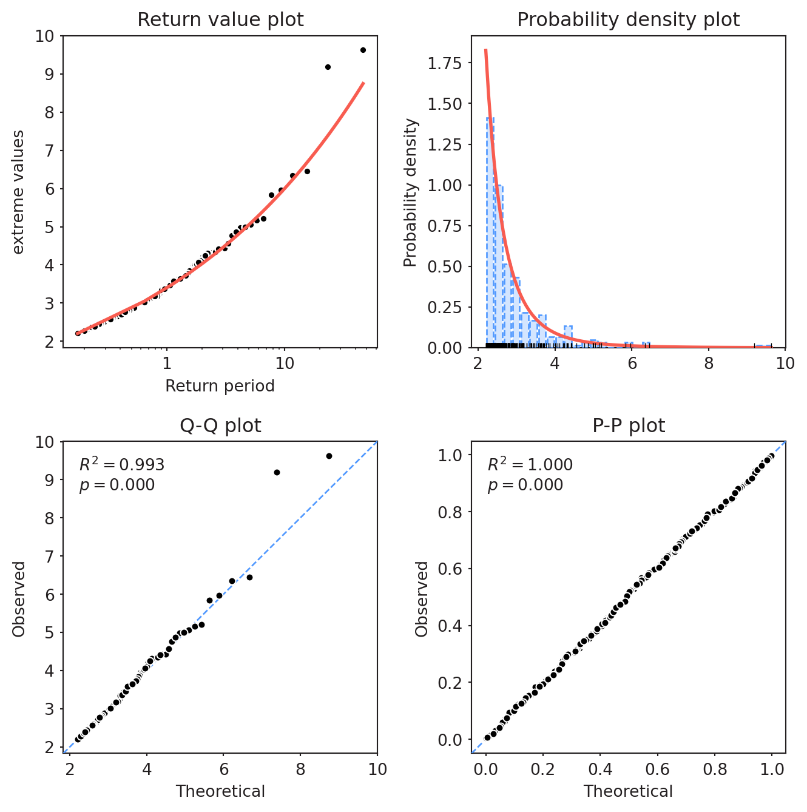
The fit is reasonable overall: most data points in the Q-Q plot align closely with the theoretical quantiles (\(R^2 = 0.979\)), and the fitted density matches the empirical histogram well. A few irregularities appear in the upper tail, and one observation — corresponding to an exceptionally large loss — lies clearly above the reference line, indicating that the model underestimates this single extreme. This is not unexpected: isolated outliers of this magnitude are a known limitation of any stationary GPD fit to financial returns.
The P-P plot is almost perfect (\(R^2 = 1.000\)), but this is of limited diagnostic value for extreme value models: P-P plots compress the tails, so they are insensitive to exactly the region that matters most here. The Q-Q plot is the more informative diagnostic. The reported \(p\)-values refer to the significance of the correlation between empirical and theoretical quantiles/probabilities (so \(p = 0.000\) indicates a highly significant linear relationship, not rejection of the fit).
Overall, the model appears adequate for risk measurement at moderately extreme quantiles, with the caveat that individual outliers beyond the bulk of the tail may be underestimated.
Next, I check for anomalies in chain mixing and inspect the posterior distribution of the parameters.
model.plot_trace()
model.plot_corner()
trace = model.model.trace
burn_in = trace.shape[1] // 2
samples = trace[:, burn_in:, :].reshape(-1, trace.shape[2])
s_xi = samples.mean(axis=0)
print(f"xi (posterior mean): {samples[:, 0].mean():.3f}")
xi_mean = samples[:, 0].mean()
xi_lo = np.percentile(samples[:, 0], 2.5)
xi_hi = np.percentile(samples[:, 0], 97.5)
tail_index = 1 / xi_meanxi (posterior mean): 0.260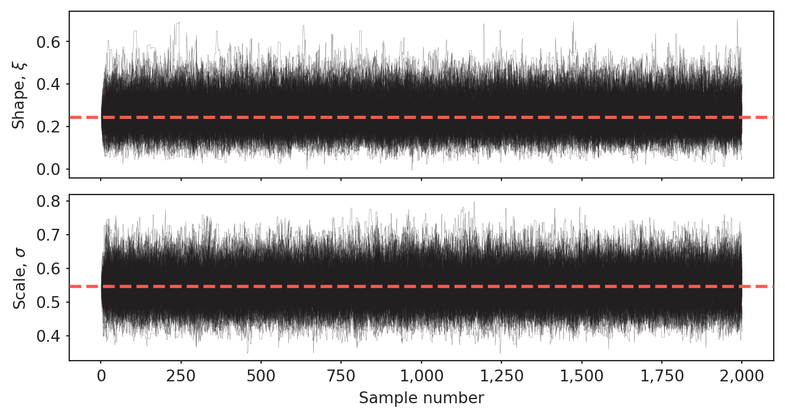
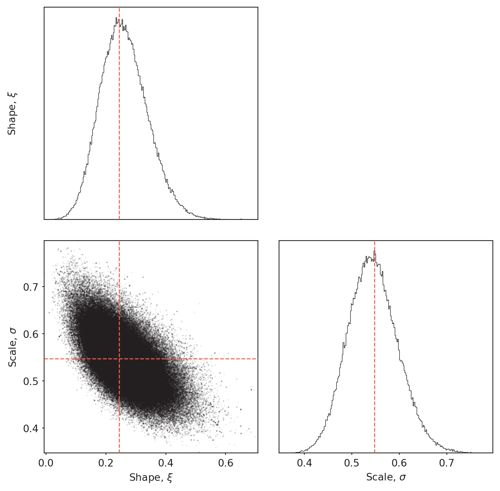
The chains mix well: both parameters fluctuate around a stable level from early on, with no drift, stickiness, or visible regime changes. The posterior of \(\xi\) is reasonably concentrated (roughly \(\xi \in\) [0.12, 0.43]), smooth, and unimodal, with no outlying mass. The corner plot reveals a clear negative correlation between \(\xi\) and \(\sigma\), which is a well-known feature of the GPD likelihood — the two parameters are not orthogonal, so estimation uncertainty in one partly compensates for the other.
With \(\hat{\xi} \approx\) 0.26, the implied tail index is \(1/\xi \approx\) 4.$. This means that moments of order \(k < 4\) exist, while the **fourth moment (kurtosis) is already infinite — a plausible result for daily equity losses and consistent with the heavy-tailed behaviour typically observed in financial return series.
Note: The \(R^2\) values, posterior intervals, and tail index quoted above reflect a model run on data through April 2026 and will change slightly with different data vintages or random seeds.
Posterior of \(\operatorname{VaR}_{0.99}\) and \(\operatorname{ES}_{0.99}\)
Having obtained the GPD parameters from the POT model, I now compute the 99%-VaR and 99%-ES. Following McNeil et al. (2015), VaR is given by \[ \operatorname{VaR}_\alpha = u + \frac{\beta}{\xi}\left(\left(\frac{1-\alpha}{\bar{F}(u)}\right)^{-\xi} - 1\right), \] where \(\xi\) and \(\beta\) are the shape and scale parameters of the fitted GPD. The tail probability \(\bar{F}(u) = P(X > u)\) is estimated empirically by \[ \hat{\bar{F}}(u) = \frac{N_u}{n}, \]
the proportion of observations exceeding the threshold \(u\). Expected shortfall follows as \[ \operatorname{ES}_\alpha = \frac{\operatorname{VaR}_\alpha + \beta - \xi u}{1 - \xi}, \qquad \xi < 1, \]
where the condition \(\xi < 1\) ensures that \(\operatorname{ES}_\alpha\) is finite. With \(\hat{\xi} \approx 0.25\) this is comfortably satisfied.
Since the model was estimated via emcee, I propagate the full posterior of \((\xi, \beta)\) through both formulas instead of relying on point estimates only, which allows uncertainty to be reflected in credible intervals for \(\operatorname{VaR}_\alpha\) and \(\operatorname{ES}_\alpha\).
u = 2.2
n_u = len(model.extremes)
n = len(losses)
f_bar_u = n_u / n
alpha = 0.99
xi, beta = samples[:, 0], samples[:, 1]
VaR_z = u + (beta / xi) * (((1 - alpha) / f_bar_u) ** (-xi) - 1)
ES_z = (VaR_z + beta - xi * u) / (1 - xi)
forecast = result.forecast(horizon=1, reindex=False)
sigma_next = np.sqrt(forecast.variance.values[-1, 0])
VaR_posterior = VaR_z * sigma_next
ES_posterior = ES_z * sigma_next
print(
f"Next-day VaR_{alpha}: {np.median(VaR_posterior):.2f}% "
f"[{np.percentile(VaR_posterior, 2.5):.2f}%, "
f"{np.percentile(VaR_posterior, 97.5):.2f}%]"
)
print(
f"Next-day ES_{alpha}: {np.median(ES_posterior):.2f}% "
f"[{np.percentile(ES_posterior, 2.5):.2f}%, "
f"{np.percentile(ES_posterior, 97.5):.2f}%]"
)Next-day VaR_0.99: 2.15% [2.09%, 2.22%]
Next-day ES_0.99: 2.87% [2.70%, 3.16%]Backtesting
VaR Backtest
To assess how well the conditional EVT model performs out-of-sample, I run a rolling-window backtest of the 99% one-day VaR. For each day \(t \geq 1000\) in the sample, the procedure is:
- Re-fit a GARCH(1,1) model on the most recent 1000 returns;
- Extract the standardised residuals and fit a GPD via maximum likelihood to the exceedances above their 95% empirical quantile;
- Obtain the one-step-ahead conditional volatility \(\hat{\sigma}_{t+1}\) from the GARCH forecast;
- Compute \(\text{VaR}^z_{0.99}\) from the GPD parameters and rescale to \(\text{VaR}_{t+1} = \hat{\sigma}_{t+1} \cdot \text{VaR}^z_{0.99}\);
- Record a violation if the realised loss at \(t+1\) exceeds \(\text{VaR}_{t+1}\).
This produces a sequence of out-of-sample VaR forecasts and corresponding violation indicators that can be evaluated with standard backtesting procedures (Kupiec, Christoffersen).
A few design choices deserve comment. The rolling window of 1000 days (~4 trading years) balances estimation stability against responsiveness to changing market regimes. The threshold is set to the rolling 95% quantile rather than a fixed value, since the scale of the standardised residuals can drift slightly between windows. GPD parameters are estimated by MLE rather than MCMC: with several thousand re-fits, full Bayesian inference would be computationally prohibitive, and only the point estimate of \(\text{VaR}^z\) is needed to determine whether a violation occurred. Iterations with fewer than 20 exceedances are flagged as missing and excluded from the evaluation. Computation is parallelised across cores using multiprocessing.Pool; the worker initialiser pattern is required on macOS where the spawn start method does not inherit module-level state.
The rolling-window logic is implemented in VaR_backtest_utils.py (see repository); the cell below executes the backtest.
window = 1000
with Pool(
10,
initializer=init_worker,
initargs=(
returns_dec.values,
window,
),
) as pool:
results = pool.map(backtest_single, range(window, len(returns_dec)))
var_estimates, es_estimates, violations = zip(*results)
var_estimates = np.array(var_estimates)
es_estimates = np.array(es_estimates)
violations = np.array(violations)
valid_var = ~np.isnan(var_estimates)
violations_clean = violations[valid_var]
var_clean = var_estimates[valid_var]
es_clean = es_estimates[valid_var]Results
n_obs = len(violations_clean)
n_viol = violations_clean.sum()
print(f"Violations: {n_viol}/{n_obs} ({n_viol / n_obs:.4f})")
print(f"Expected: {n_obs * 0.01:.0f} ({0.01})")
# --- Kupiec-Test ---
p0 = 0.01
p_hat = n_viol / n_obs
LR = -2 * (
n_viol * np.log(p0)
+ (n_obs - n_viol) * np.log(1 - p0)
- n_viol * np.log(p_hat)
- (n_obs - n_viol) * np.log(1 - p_hat)
)
p_value = 1 - chi2.cdf(LR, df=1)
print(f"Kupiec: LR={LR:.3f}, p={p_value:.4f}")
dates_test = returns_dec.index[window:][valid_var]
actual_losses = -returns_dec.values[window:][valid_var]
# --- Christoffersen-Test ---
def christoffersen(violations, p0=0.01):
v = np.asarray(violations).astype(int)
n00 = ((v[:-1]==0)&(v[1:]==0)).sum()
n01 = ((v[:-1]==0)&(v[1:]==1)).sum()
n10 = ((v[:-1]==1)&(v[1:]==0)).sum()
n11 = ((v[:-1]==1)&(v[1:]==1)).sum()
pi01, pi11 = n01/(n00+n01), n11/(n10+n11)
pi = (n01+n11)/(n00+n01+n10+n11)
LR_ind = -2*((n00+n10)*np.log(1-pi) + (n01+n11)*np.log(pi)
- n00*np.log(1-pi01) - n01*np.log(pi01)
- n10*np.log(1-pi11) - n11*np.log(pi11))
return LR_ind, 1 - chi2.cdf(LR_ind, df=1)
LR_ind, p_ind = christoffersen(violations_clean)
LR_cc = LR + LR_ind # LR = Kupiec von oben
p_cc = 1 - chi2.cdf(LR_cc, df=2)
print(f"Christoffersen Ind: LR={LR_ind:.3f}, p={p_ind:.4f}")
print(f"Christoffersen CC: LR={LR_cc:.3f}, p={1-chi2.cdf(LR_cc, df=2):.4f}")
plt.figure(figsize=(14, 5))
plt.plot(dates_test, actual_losses, alpha=0.4, lw=0.5, color="steelblue")
plt.plot(dates_test, var_clean, color="red", lw=0.8, label="VaR 99%")
plt.scatter(
dates_test[violations_clean],
actual_losses[violations_clean],
color="darkred",
s=10,
zorder=5,
label=f"Violations ({n_viol})",
)
plt.legend()
plt.title("VaR Backtesting — GARCH + Rolling POT")
plt.ylabel("Loss (simple return)")
plt.show()
start_year = dates_test[0].year
end_year = dates_test[-1].year
n_years_bt = end_year - start_yearViolations: 110/10691 (0.0103)
Expected: 107 (0.01)
Kupiec: LR=0.089, p=0.7650
Christoffersen Ind: LR=4.516, p=0.0336
Christoffersen CC: LR=4.606, p=0.1000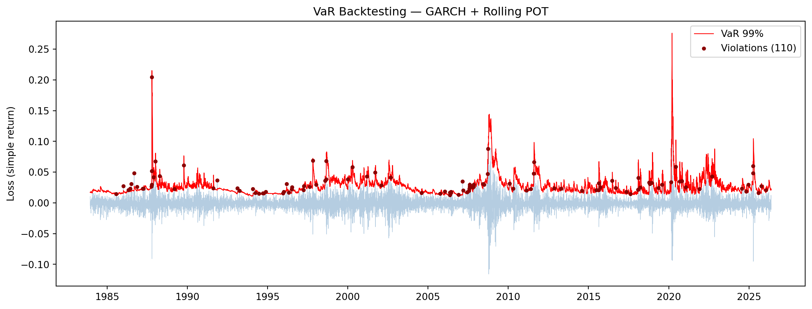
Discussion
The backtest covers 10,691 out-of-sample days from 1983 to 2026, with np.int64(110) recorded violations of the 99% \(\text{VaR}\).
Unconditional coverage. With an empirical violation rate of 1.03% against a nominal 1%, the Kupiec test does not reject the null of correct unconditional coverage (\(LR =\) 0.09, \(p =\) 0.76). The conditional EVT model produces almost exactly the right number of tail violations over four decades, including periods as different as the 1987 crash, the dot-com era, the global financial crisis, the eurozone crisis, and the COVID-19 shock.
Independence. The Christoffersen independence test rejects the null at the 5% level (\(LR =\) 4.52, \(p =\) 0.034). Visual inspection of the violation series confirms this: violations cluster around major crisis periods, particularly 1987, 1998 (LTCM/Asian crisis), 2007–2009, and March 2020. Although GARCH(1,1) substantially reduces volatility-induced clustering relative to a static model, residual dependence remains — likely because GARCH(1,1) does not capture the leverage effect, assumes Gaussian innovations even though the standardised residuals are clearly heavy-tailed, and uses a rather simple lag structure.
Conditional coverage. The combined test does not reject at the 5% level (\(LR =\) 4.61, \(p =\) 0.10). Overall, the model captures the right number of tail events but with slightly clustered timing.
Practical assessment. From a risk-management perspective the result is encouraging: a violation rate close to the nominal level over a 43-year out-of-sample window is a strong outcome, especially considering that the model was estimated on rolling windows of only 1000 days and never had access to future information. The clustering of violations is a real but interpretable limitation. Natural refinements that should reduce it are an asymmetric GARCH specification (e.g. GJR-GARCH or EGARCH) and a heavier-tailed innovation distribution (Student-\(t\) or skewed-\(t\)). Both are straightforward extensions and will be explored in follow-up work.
ES Backtest
Since backtesting is conducted at the 99% level, only np.int64(110) violation days are available for \(\text{ES}\) evaluation. I test whether the exceedance residuals \(K_{t+1} = (L_{t+1} - \widehat{ES}_t^\alpha) / \widehat{ES}_t^\alpha\) have mean zero using a one-sample t-test
exceedance_residuals = (
actual_losses[violations_clean] - es_clean[violations_clean]
) / es_clean[violations_clean]
stat, p_val = ttest_1samp(exceedance_residuals, popmean=0)
print(stat)
print(p_val)
es_empirical = actual_losses[violations_clean].mean()
es_estimated = es_clean[violations_clean].mean()
difference = (es_empirical-es_estimated)*1001.7902121476853319
0.07619609335937622The null hypothesis of mean-zero residuals is not rejected at the 5% level (\(t =\) 1.790, \(p =\) 0.0762). The estimated ES falls short of the empirical mean loss on violation days by roughly 0.23 percentage points, but this underestimation is not statistically significant.
10-Day Forecast
Standard scaling (VaR_z · σ_h) implicitly assumes that the h-day standardised return has the same distribution as the 1-day innovation. Under iid-like residuals this is fine for the daily VaR path (each horizon is still a 1-day quantile, only σh_h σh changes), but not for the cumulative 10-day loss: a sum of hh h heavy-tailed variables drifts toward a thinner-tailed limit (CLT), so cumulative scaling overstates the true tail. To handle this consistently I simulate forward paths using HS-GARCH-EVT approach (McNeil & Frey, 2000): the GARCH(1,1) recursion is propagated with innovations drawn from the empirical residual distribution below the threshold and from the fitted GPD above it. This gives both the daily VaR/ES path and the proper 10-day aggregate distribution, and lets me read off the comparison to naive scaling directly. For comparison, the naive square-root-of-time scaling rule is included. As expected, it systematically overstates both VaR and ES.
def simulate_garch_evt(
garch_result, std_resid, threshold, xi, sigma_gpd,
horizon=10, n_sims=20_000, seed=42,
):
"""
Filtered Historical Simulation with EVT lower tail.
Innovations: bootstrap z from {z >= -u} (body), draw -(u+GPD) for loss tail.
Returns simulated simple % returns, shape (n_sims, horizon).
"""
rng = np.random.default_rng(seed)
p = garch_result.params
mu, omega = p["mu"], p["omega"]
a1, b1 = p["alpha[1]"], p["beta[1]"]
sigma2_t = float(garch_result.conditional_volatility.iloc[-1]) ** 2
eps_t = float(garch_result.resid.iloc[-1])
z_full = std_resid.dropna().to_numpy()
z_body = z_full[z_full >= -threshold]
p_tail = float((z_full < -threshold).mean())
u_unif = rng.uniform(size=(n_sims, horizon))
is_tail = u_unif < p_tail
z = np.empty((n_sims, horizon))
z[~is_tail] = rng.choice(z_body, size=(~is_tail).sum(), replace=True)
excess = genpareto.rvs(xi, scale=sigma_gpd,
size=is_tail.sum(), random_state=rng)
z[is_tail] = -(threshold + excess)
sim = np.empty((n_sims, horizon))
s2 = np.full(n_sims, sigma2_t)
e = np.full(n_sims, eps_t)
for h in range(horizon):
s2 = omega + a1 * e**2 + b1 * s2
e = np.sqrt(s2) * z[:, h]
sim[:, h] = mu + e
return sim# --- MC: posterior-median point estimate ---
xi_med, beta_med = np.median(xi), np.median(beta)
varz_med, esz_med = np.median(VaR_z), np.median(ES_z)
sim = simulate_garch_evt(result, std_resid, threshold=u,
xi=xi_med, sigma_gpd=beta_med,
horizon=10, n_sims=20_000)
daily_loss = -sim # simple % loss per day
var_path_mc = np.quantile(daily_loss, alpha, axis=0)
es_path_mc = np.array([
daily_loss[daily_loss[:, h] >= var_path_mc[h], h].mean()
for h in range(sim.shape[1])
])
cum_loss = (1.0 - np.prod(1.0 + sim / 100.0, axis=1)) * 100.0
var_cum_mc = np.quantile(cum_loss, alpha)
es_cum_mc = cum_loss[cum_loss >= var_cum_mc].mean()
# --- Naive scaling for comparison ---
fc = result.forecast(horizon=10, reindex=False)
sigma_fc = np.sqrt(fc.variance.values[-1, :]) # daily σ_h, in %
sigma_10d = np.sqrt(np.sum(sigma_fc ** 2))
var_path_scaled = varz_med * sigma_fc
es_path_scaled = esz_med * sigma_fc
var_cum_scaled = varz_med * sigma_10d
es_cum_scaled = esz_med * sigma_10d
print(f"10-day VaR{alpha:.0%} | MC: {var_cum_mc:5.2f}% scaling: {var_cum_scaled:5.2f}%")
print(f"10-day ES{alpha:.0%} | MC: {es_cum_mc:5.2f}% scaling: {es_cum_scaled:5.2f}%")10-day VaR99% | MC: 6.46% scaling: 7.03%
10-day ES99% | MC: 8.54% scaling: 9.39%h_axis = np.arange(1, 11)
fig, axes = plt.subplots(1, 2, figsize=(14, 5))
# (a) Daily path
ax = axes[0]
ax.plot(h_axis, var_path_mc, "o-", color="red", label="VaR — MC")
ax.plot(h_axis, var_path_scaled, "s--", color="red", alpha=0.6, label="VaR — scaling")
ax.plot(h_axis, es_path_mc, "o-", color="darkred", label="ES — MC")
ax.plot(h_axis, es_path_scaled, "s--", color="darkred", alpha=0.6, label="ES — scaling")
ax.set_xlabel("Horizon (trading days)")
ax.set_ylabel(f"{alpha:.0%} risk measure (% loss)")
ax.set_title("Daily VaR / ES path")
ax.legend()
# (b) Cumulative distribution
ax = axes[1]
sns.histplot(cum_loss, bins=80, stat="density", alpha=0.5,
color="steelblue", edgecolor="none", ax=ax)
ax.axvline(var_cum_mc, color="red", lw=2, label=f"VaR (MC) {var_cum_mc:.2f}%")
ax.axvline(es_cum_mc, color="darkred", lw=2, ls="--", label=f"ES (MC) {es_cum_mc:.2f}%")
ax.axvline(var_cum_scaled, color="black", lw=1.5, ls=":", label=f"VaR (scaling) {var_cum_scaled:.2f}%")
ax.axvline(es_cum_scaled, color="black", lw=2, ls="--", label=f"ES (scaling) {es_cum_scaled:.2f}%")
ax.set_xlim(left=np.quantile(cum_loss, 0.001))
ax.set_xlabel("10-day cumulative loss (%)")
ax.set_title("Simulated 10-day loss distribution")
ax.legend()
fig.suptitle("S&P 500 — 10-day VaR/ES forecast (FHS + EVT)", y=1.02)
plt.tight_layout()
plt.show()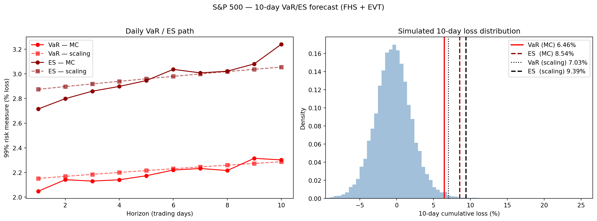
n_post = 400
rng_idx = np.random.default_rng(0)
idx = rng_idx.choice(len(xi), n_post, replace=False)
cum_pool = []
for k in idx:
s = simulate_garch_evt(result, std_resid, threshold=u,
xi=xi[k], sigma_gpd=beta[k],
horizon=10, n_sims=2_000, seed=int(k))
cum_pool.append((1.0 - np.prod(1.0 + s / 100.0, axis=1)) * 100.0)
cum_pool = np.concatenate(cum_pool)
var_cum_bayes = np.quantile(cum_pool, alpha)
es_cum_bayes = cum_pool[cum_pool >= var_cum_bayes].mean()
# Per-posterior-draw quantile, to get a credible interval on VaR itself
var_per_draw = np.array([
np.quantile(c, alpha) for c in np.split(cum_pool, n_post)
])
ci = np.percentile(var_per_draw, [2.5, 97.5])
print(f"10-day VaR{alpha:.0%} (Bayesian predictive): "
f"{var_cum_bayes:.2f}% CI95 [{ci[0]:.2f}%, {ci[1]:.2f}%]")
print(f"10-day ES{alpha:.0%} (Bayesian predictive): {es_cum_bayes:.2f}%")10-day VaR99% (Bayesian predictive): 6.59% CI95 [5.78%, 7.42%]
10-day ES99% (Bayesian predictive): 8.78%Unfiltered POT-Analysis - Unconditional Analysis
For long-term risk assessment — such as determining regulatory capital buffers or evaluating tail risk over multi-year horizons — it is useful to characterise the loss distribution without conditioning on a specific volatility state. The natural quantity here is the return level: the loss magnitude that is exceeded on average once every \(T\) years. Its conceptual proximity to \(\text{VaR}\) makes it straightforward to compute. Since the S&P 500 has approximately 250 trading days per year, a \(T\)-year return level corresponds to the VaR at confidence level
\[ \alpha = 1 - \frac{1}{T \cdot 250}, \]
which can be read directly from the fitted GPD via the standard POT formula.
The fitting procedure mirrors the conditional analysis exactly; I therefore restrict the commentary to features specific to the unconditional setting.
pyextremes.plot_mean_residual_life(log_losses)
pyextremes.plot_parameter_stability(log_losses)(<Axes: ylabel='Shape, $\\xi$'>,
<Axes: xlabel='Threshold', ylabel='Modified scale, $\\sigma^*$'>)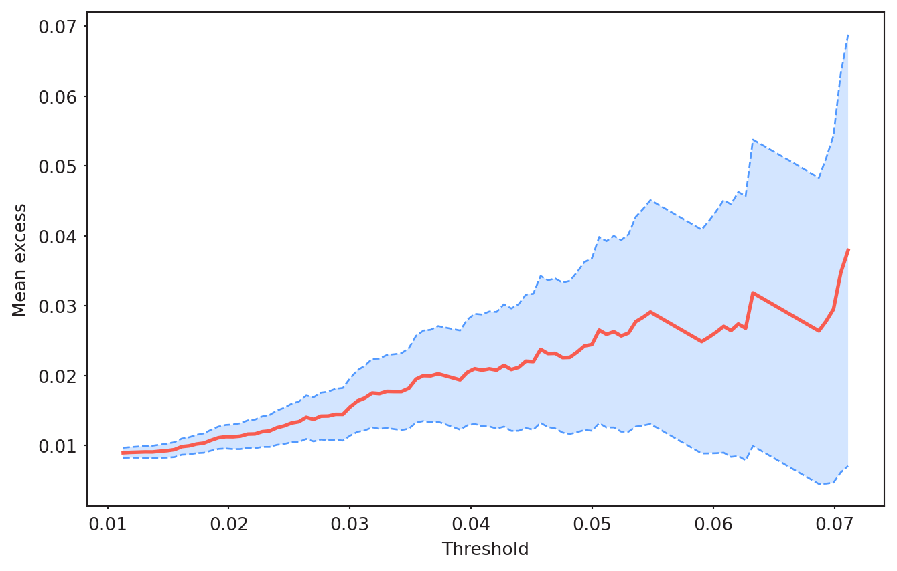
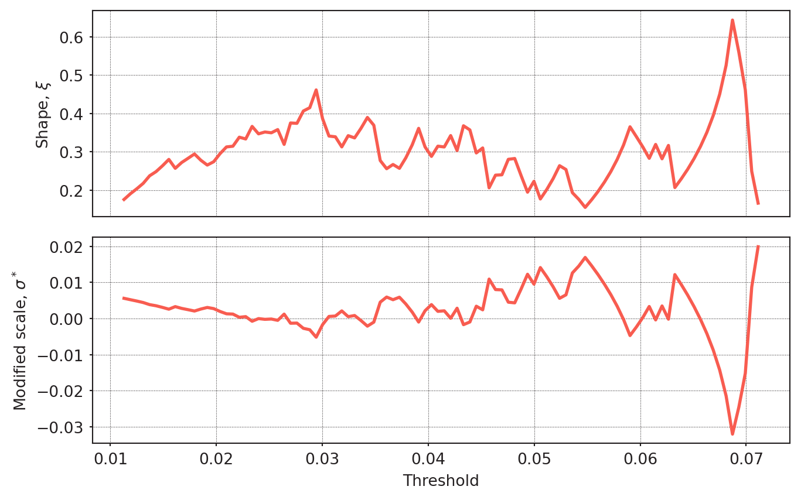
A notable difference from the conditional analysis is the instability of the GPD parameter estimates. The parameter stability plot reveals no clear region where both \(\xi\) and \(\sigma^*\) stabilise simultaneously, making threshold selection considerably more difficult. This is a direct consequence of the volatility clustering present in raw log-losses: since large losses tend to occur in bursts, the tail behaviour of the unfiltered series is less well described by a stationary GPD than that of the GARCH residuals.
print(f"Exceedances at u=0.02: {np.sum(log_losses > 0.02)}")
print(f"Exceedances at u=0.0225: {np.sum(log_losses > 0.0225)}")
print(f"Exceedances at u=0.024: {np.sum(log_losses > 0.024)}")
n_exceed_u_2 = int(np.sum(log_losses > 0.024))Exceedances at u=0.02: 379
Exceedances at u=0.0225: 293
Exceedances at u=0.024: 241Despite the instability in the parameter plots, the exceedance count of 241 at \(u = 0.024\) provides a sufficient basis for GPD estimation, and I proceed with this threshold.
model = EVA(data=log_losses)
model.get_extremes(method="POT", threshold=0.024)
with Pool(10) as pool:
model.fit_model(
distribution="genpareto",
model="Emcee",
n_walkers=100,
n_samples=2000,
pool=pool,
)
model.plot_diagnostic()
model.plot_trace()
model.plot_corner()
trace = model.model.trace
trace.shape[1] // 2
burn_in = trace.shape[1] // 2
samples_naive = trace[:, burn_in:, :].reshape(-1, trace.shape[2])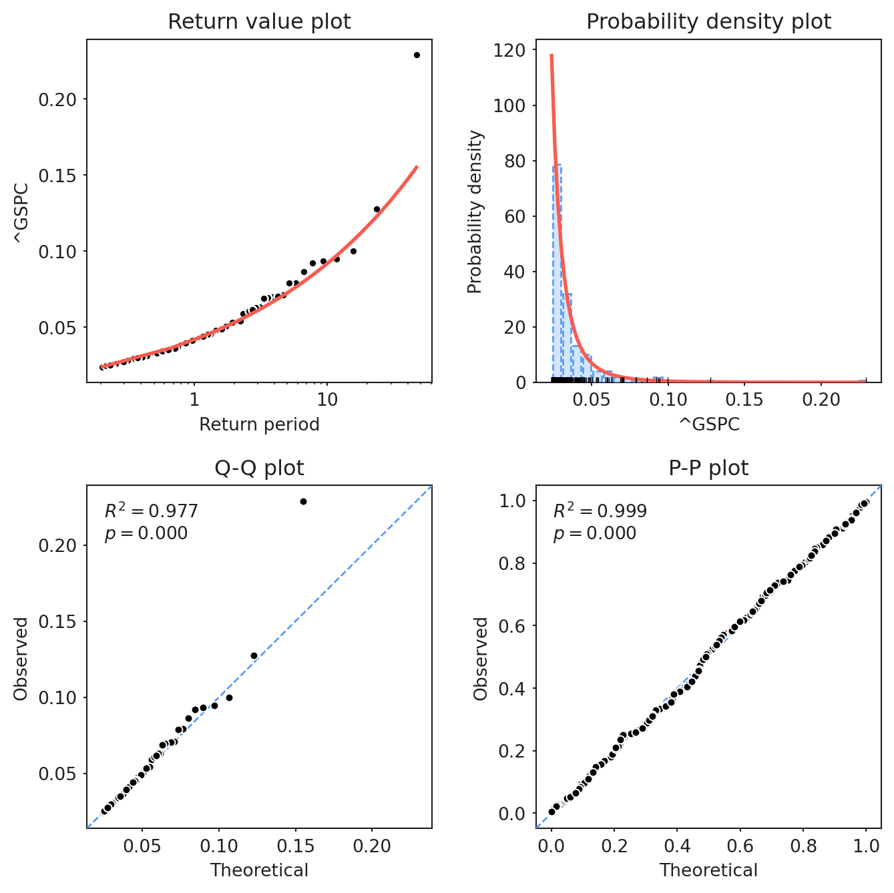
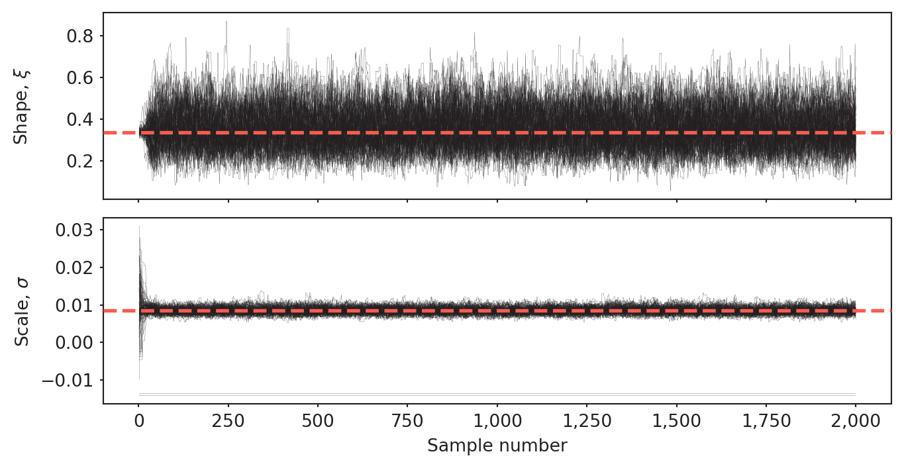
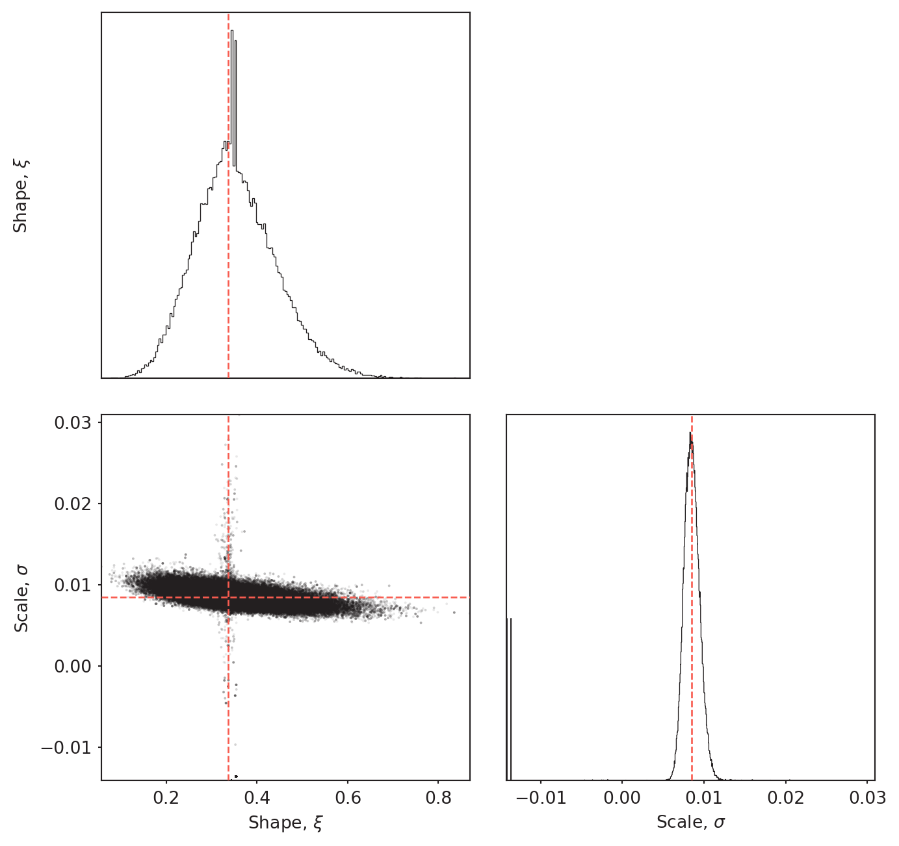
The diagnostic plot suggests an adequate overall fit, comparable to the conditional analysis. However, the trace and corner plots reveal an anomaly in the scale parameter \(\sigma\): the posterior places non-negligible mass on negative values, indicating that the MCMC sampler explored regions of the parameter space that are theoretically inadmissible. This is addressed in the return level calculations by restricting inference to samples with \(\xi > 0\) and \(\sigma > 0\).
Calculating return levels
Using the posterior distribution of \((\xi, \sigma)\), return levels are computed by substituting the \(T\)-year confidence level into the standard POT formula, for \(T \in \{1, 5, 10, 20, 50\}\) years.
u = 0.024
n_u = len(model.extremes)
n = len(log_losses)
f_bar_u = n_u / n
T_values = [1, 5, 10, 20, 50]
alpha_naive = 1 - 1/(np.array(T_values)*250)
results_naive = {}
for T, a in zip(T_values, alpha_naive):
results_naive[T] = np.array(
[
u + s[1] / s[0] * (((1 - a) / f_bar_u) ** (-s[0]) - 1)
for s in samples_naive
if s[0] > 0 and s[1] > 0
]
)
for T, r in results_naive.items():
r_med = np.median(r)
ci_lower, ci_upper = np.percentile(r, [2.5, 97.5])
print(
f"{T}-year VaR_{T}: {(1 - np.exp(-r_med)) * 100:.2f}% "
f"[{(1 - np.exp(-ci_lower)) * 100:.2f}%, "
f"{(1 - np.exp(-ci_upper)) * 100:.2f}%]")1-year VaR_1: 4.10% [3.84%, 4.44%]
5-year VaR_5: 7.10% [6.14%, 8.78%]
10-year VaR_10: 8.95% [7.36%, 12.02%]
20-year VaR_20: 11.25% [8.74%, 16.55%]
50-year VaR_50: 15.14% [10.83%, 25.17%]T_values = [1, 5, 10, 20, 50]
medians = [np.median(results_naive[T]) for T in T_values]
ci_lower = [np.percentile(results_naive[T], 2.5) for T in T_values]
ci_upper = [np.percentile(results_naive[T], 97.5) for T in T_values]
# Convert from log-loss to simple return
medians_pct = [(1 - np.exp(-m)) * 100 for m in medians]
ci_lower_pct = [(1 - np.exp(-c)) * 100 for c in ci_lower]
ci_upper_pct = [(1 - np.exp(-c)) * 100 for c in ci_upper]
fig, ax = plt.subplots(figsize=(10, 5))
ax.plot(T_values, medians_pct, "o-", color="red", lw=2, label="Return Level (median)")
ax.fill_between(T_values, ci_lower_pct, ci_upper_pct, color="red", alpha=0.2, label="95% Credible Interval")
ax.set_xlabel("Return Period (years)")
ax.set_ylabel("Loss (%)")
ax.set_title("S&P 500 — Return Levels (Unconditional POT)")
ax.legend()
plt.tight_layout()
plt.show()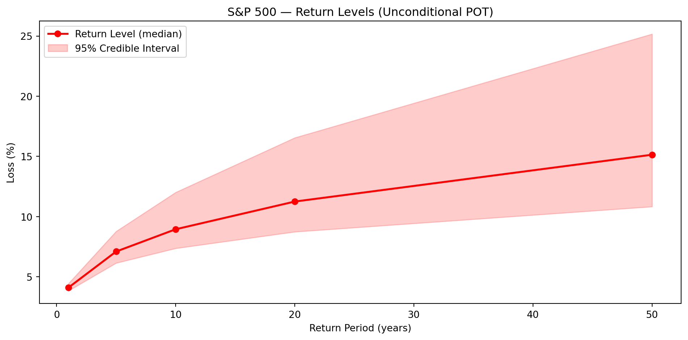
The return levels increase concavely with the return period, as expected under a heavy-tailed but finite-mean distribution (\(\hat{\xi} < 1\)). Credible intervals widen substantially at longer horizons, reflecting the compounding of parameter uncertainty — particularly in \(\xi\) — as the return period moves further into the tail. The 50-year return level of roughly 15% carries a 95% credible interval spanning nearly 15 percentage points, underscoring the inherent difficulty of long-horizon tail estimation from finite samples.
Conclusion
As McNeil & Frey (2000) demonstrated, conditional and unconditional POT analysis are not competing approaches but complementary ones, as they address fundamentally different questions. The conditional model — combining GARCH pre-filtering with GPD tail estimation — is suited for short-term risk management: it captures the current volatility regime and produces dynamic VaR and ES estimates that respond to changing market conditions. The unconditional model, applied directly to the raw log-loss series, is better suited for long-run tail characterisation via return levels, provided that the tail behaviour of the return series is sufficiently stable over the sample period — an assumption that is difficult to verify over a 46-year window but is at least partially mitigated by the use of a long sample that covers multiple structural regimes. .
A further methodological contribution of this project is the use of Bayesian inference via MCMC rather than maximum likelihood estimation for the GPD parameters. Since different parameter values can have substantial consequences for risk measure estimates, propagating the full posterior distribution through the VaR and ES formulas provides a more honest account of estimation uncertainty than a single point estimate would.
The rolling-window backtest over 43 years yields an empirical violation rate close to the nominal 1%, and the Kupiec test does not reject correct unconditional coverage (\(p =\) 0.76). The main limitation is violation clustering: the Christoffersen independence test rejects at the 5% level (\(p =\) 0.034), and the conditional coverage test is borderline (\(p =\) 0.10). This residual dependence reflects the well-known limitations of GARCH(1,1) — its symmetric treatment of positive and negative shocks and its Gaussian innovation assumption — and motivates natural extensions such as GJR-GARCH or a Student-\(t\) innovation distribution.